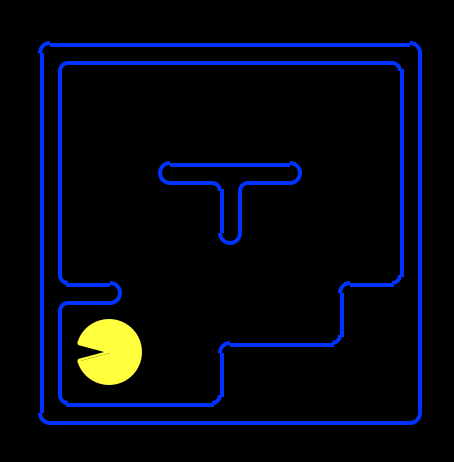

Homework Three
Logic
Introduction
In this project, you will use/write simple Python functions that generate logical sentences describing Pacman physics, aka pacphysics. Then you will use a SAT solver, pycosat, to solve the logical inference tasks associated with planning (generating action sequences to reach goal locations and eat all the dots), localization (finding oneself in a map, given a local sensor model), mapping (building the map from scratch), and SLAM (simultaneous localization and mapping).
As in previous programming assignments, this assignment includes an autograder for you to grade your answers on your machine. This can be run with the command:
python autograder.pyThe test cases you run at home are the same test cases that I will use. You can turn in your homework and unlimited number of times to the submission server, however the server will not autograde this assignment. If you pass the test cases locally, you will pass them when I run them.
The code for this project consists of several Python files, some of which you will need to read and understand in order to complete the assignment, and some of which you can ignore. You can download all the code and supporting files in logic dot zip.
Files you will edit
logicPlan.py |
Where you will put your code for the various logical agents. |
Files you might want to look at
logic.py |
Propsitional logic code originally from https://code.google.com/p/aima-python/ with modifications for our project. There are several useful utility functions for working with logic in here. |
logicAgents.py |
The file that defines in logical planning form the two specific problems that Pacman will encounter in this project. |
pycosat_test.py |
Quick test main function that checks that the pycosat module is installed correctly. |
game.py |
The internal simulator code for the Pacman world. The only thing you might want to look at in here is the Grid class. |
test_cases/ |
Directory containing the test cases for each question |
Files to Edit and Submit: You will edit logicPlan.py. Submit it in an uncompressed tar to the submission server, just like the other homeworks. This assignment will be graded out of 100, with 104 points available: you can earn 4 pts of extra credit.
Evaluation: Your code will be autograded for technical correctness. Please do not change the names of any provided functions or classes within the code, or you will wreak havoc on the autograder. However, the correctness of your implementation – not the autograder’s judgements – will be the final judge of your score. If necessary, I will review and grade assignments individually to ensure that you receive due credit for your work.
Academic Dishonesty: This assignment should be your own work, as outlined in the syllabus. Ask if you have questions. I do check, and I take this seriously.
The Expr Class
In the first part of this project, you will be working with the Expr class defined in logic.py to build propositional logic sentences. An Expr object is implemented as a tree with logical operators (\(\land\), \(\lor\), \(\neg\), \(\Rightarrow\), \(\iff\)) at each node and with literals (A, B, C) at the leaves. Here is an example sentence and its representation:
(A \(\land\) B) \(\iff\) (\(\neg\) C \(\lor\) D)

To instantiate a symbol named ‘A’, call the constructor like this:
A = Expr('A')The Expr class allows you to use Python operators to build up these expressions. The following are the available Python operators and their meanings:
~A: \(\neg\) AA & B: A \(\land\) BA | B: A \(\lor\) BA >> B: A \(\Rightarrow\) BA % B: A \(\iff\) B
So to build the expression A \(\land\) B, you would type this:
A = Expr('A')
B = Expr('B')
a_and_b = A & B(Note that A to the left of the assignment operator in that example is just a Python variable name, i.e. symbol1 = Expr('A') would have worked just as well.)
A note on conjoin and disjoin
One last important thing to note is that you must use conjoin and disjoin operators wherever possible. conjoin creates a chained & (logical AND) expression, and disjoin creates a chained | (logical OR) expression. Let’s say you wanted to check whether conditions A, B, C, D, and E are all true. The naive way to achieve this is writing condition = A & B & C & D & E, but this actually translates to ((((A & B) & C) & D) & E), which creates a very nested logic tree (see (1) in diagram below) and becomes a nightmare to debug. Instead, conjoin makes a flat tree (see (2) in diagram below).
Prop Symbol Names (Important!)
For the rest of the project, please use the following variable naming conventions:
Rules
- When we introduce variables, they must start with an upper-case character (including
Expr). - Only these characters should appear in variable names:
A-Z,a-z,0-9,_,^,[,]. - Logical connective characters (
&,|) must not appear in variable names. So,Expr('A & B')is illegal because it attempts to create a single constant symbol named'A & B'. We would useExpr('A') & Expr('B')to make a logical expression.
Pacphysics symbols
PropSymbolExpr(pacman_str, x, y, time=t): whether or not Pacman is at (x, y) at time t, writesP[x,y]_t.PropSymbolExpr(wall_str, x, y): whether or not a wall is at (x, y), writesWALL[x,y].PropSymbolExpr(action, time=t): whether or not pacman takes actionactionat time t, whereactionis an element ofDIRECTIONS, writes i.e.North_t.- In general,
PropSymbolExpr(str, a1, a2, a3, a4, time=a5)creates the expressionstr[a1,a2,a3,a4]_a5wherestris just a string.
There is additional, more detailed documentation for the Expr class in logic.py.
SAT Solver Setup
A SAT (satisfiability) solver takes a logic expression which encodes the rules of the world and returns a model (true and false assignments to logic symbols) that satisfies that expression if such a model exists. To efficiently find a possible model from an expression, we take advantage of the pycosat module, which is a Python wrapper around the picoSAT library.
You can install using
pip install pycosatIf your Python executable is python3, you may need
pip3 install pycosatIf you use conda:
conda install pycosatIf you use mamba, poetry, rye, uv, etc., use the syntax for your package manager.
After unzipping the project code and changing to the project code directory, run:
python pycosat_test.pyThis should output:
[1, -2, -3, -4, 5]Please let me know if you have issues with this setup. This is critical to completing the project, and I don’t want you to spend your time fighting with this installation process.
Question 1 (2 points): Logic Warm-up
This question will give you practice working with the Expr data type used in the project to represent propositional logic sentences. You will implement the following functions in logicPlan.py:
sentence1(): Create oneExprinstance that represents the proposition that the following three sentences are true. Do not do any logical simplification, just put them in a list in this order, and return the list conjoined. Each element of your list should correspond to each of the three sentences.
A \(\lor\) B
\(\neg\) A \(\iff\) (\(\neg\) B \(\lor\) C)
\(\neg\) A \(\lor\) \(\neg\) B \(\lor\) C
sentence2(): Create oneExprinstance that represents the proposition that the following four sentences are true. Again, do not do any logical simplification, just put them in a list in this order, and return the list conjoined.
C \(\iff\) (B \(\lor\) D)
A \(\Rightarrow\) (\(\neg\) B \(\land\) \(\neg\) D)
\(\neg\) (B \(\land\) \(\neg\) C) \(\Rightarrow\) A
\(\neg\) D \(\Rightarrow\) C
sentence3(): Using thePropSymbolExprconstructor, create symbols namedPacmanAlive_0,PacmanAlive_1,PacmanBorn_0, andPacmanKilled_0. Hint: recall thatPropSymbolExpr(str, a1, a2, a3, a4, time=a5)creates the expressionstr[a1,a2,a3,a4]_a5wherestris a string; you should make some strings for this problem. Then, create oneExprinstance which encodes the following three English sentences as propositional logic in this order without any simplification:
- Pacman is alive at time 1 if and only if he was alive at time 0 and he was not killed at time 0 or he was not alive at time 0 and he was born at time 0.
- At time 0, Pacman cannot both be alive and be born.
- Pacman is born at time 0.
findModelCheck():
- Look at how the
findModel(sentence)method works: it usesto_cnfto convert the input sentence into Conjunctive Normal Form (the form required by the SAT solver), and passes it to the SAT solver to find a satisfying assignment to the symbols insentence, i.e., a model. A model is a dictionary of the symbols in your expression and a corresponding assignment of True or False. Test yoursentence1(),sentence2(), andsentence3()withfindModelby opening an interactive session in Python and runningfrom logicPlan import *andfindModel(sentence1())and similar queries for the other two. Do they match what you thought? - Based on the above, fill in
findModelCheckso that it returns something that looks the exact same asfindModel(Expr('a'))in a Python interactive session would if lower-cased letters were allowed. You should not usefindModelorExpr, simply directly recreate the output. For instance, if the output was[(MyVariable, True)], something close to the solution would bereturn [("MyVariable", True)].
entails(premise, conclusion): Return True if and only if thepremiseentails theconclusion. Hint:findModelis helpful here; think about what must be unsatisfiable in order for the entails to be True, and what it means for something to be unstatisfiable.plTrueInverse(assignments, inverse_statement): Returns True if and only if the (not inverse_statement) is True given assignments.
Before you continue, try instantiating a small sentence, e.g. A \(\land\) B \(\Rightarrow\) C, and call to_cnf on it. Inspect the output and make sure you understand it (refer to Russell & Norvig, Section 7.5.2, for details on the algorithm to_cnf implements).
To test and debug your code run:
python autograder.py -q q1Question 2 (2 points): Logic Workout
Implement the following three functions in logicPlan.py:
atLeastOne(literals): Return a single expression (Expr) in CNF that is true only if at least one expression in the input list is true. Each input expression will be a literal.atMostOne(literals): Return a single expression (Expr) in CNF that is true only if at most one expression in the input list is true. Each input expression will be a literal. HINT: Useitertools.combinations. If you have nnn literals, and at most one is true, your resulting CNF expression should be a conjunction of (n2)(n2)n \choose 2 clauses.exactlyOne(literals): Return a single expression (Expr) in CNF that is true only if exactly one expression in the input list is true. Each input expression will be a literal. If you decide to call your previously implementedatLeastOneandatMostOne, callatLeastOnefirst to pass our autograder for q3.
Each of these methods takes a list of Expr literals and returns a single Expr expression that represents the appropriate logical relationship between the expressions in the input list. An additional requirement is that the returned Expr must be in CNF (conjunctive normal form). You may NOT use the to_cnf function in your method implementations (or any of the helper functions logic.eliminate_implications, logic.move_not_inwards, and logic.distribute_and_over_or).
Don’t run to_cnf on your knowledge base when implementing your planning agents in later questions. This is because to_cnf makes your logical expression much longer sometimes, so you want to minimize this effect, and findModel does this already. In later questions, reuse your implementations for atLeastOne(.), atMostOne(.), and exactlyOne(.) instead of re-engineering these functions (to avoid accidentally making an unreasonably slow non-CNF-based implementation) from scratch.
You may utilize the logic.pl_true function to test the output of your expressions. pl_true takes an expression and a model and returns True if and only if the expression is true given the model.
To test and debug your code run:
python autograder.py -q q2Question 3 (4 points): Pacphysics and Satisfiability
In this question, you will implement the basic pacphysics logical expressions, as well as learn how to prove where pacman is and isn’t by building an appropriate knowledge base (KB) of logical expressions.
Implement the following functions in logicPlan.py:
pacmanSuccessorAxiomSingle: This generates an expression defining the sufficient and necessary conditions for Pacman to be at (x, y) at t:Read the construction of possible_causes provided.
You need to fill out the return statement, which will be an
Expr. Make sure to usedisjoinandconjoinwhere appropriate. Looking atSLAMSuccessorAxiomSinglemay be helpful, although note that the rules there are more complicated than in this function. The simpler side of the biconditional should be on the left for autograder purposes.pacphysicsAxioms: Here, you will generate a bunch of physics axioms. For timestep t:Arguments:
Required:
t= time,all_coordsandnon_outer_wall_coordsare lists of (x, y) tuples.Possibly-None: You will be using these to call functions, not much logic is required.
walls_gridis only passed through tosuccessorAxiomsand describes (known) walls.sensorModel(t: int, non_outer_wall_coords) -> Exprreturns a singleExprdescribing observation rules; you can take a look atsensorAxiomsandSLAMSensorAxiomsto see examples of this.successorAxioms(t: int, walls_grid, non_outer_wall_coords) -> Exprdescribes transition rules, e.g. how previous locations and actions of Pacman affect the current location; we have seen this in the functions in the previous bullet point. ONLY CALL THIS IF NECESSARY (when there are grid walls, and t!= 0)
Algorithm:
For all (x, y) in
all_coords, append the following implication (if-then form): if a wall is at (x, y), then Pacman is not at (x, y) at t.Pacman is at exactly one of the
non_outer_wall_coordsat timestep t.Pacman takes exactly one of the four actions in
DIRECTIONSat timestep t.Sensors: append the result of
sensorAxioms. All callers except forcheckLocationSatisfiabilitymake use of this; how to handle the case where we don’t want any sensor axioms added is up to you.Transitions: append the result of
successorAxioms. All callers will use this.Add each of the sentences above to
pacphysics_sentences. As you can see in the return statement, these will be conjoined and returned.Function passing syntax:
Let
def myFunction(x, y, t): return PropSymbolExpr('hello', x, y, time=t)be a function we want to use.Let
def myCaller(func: Callable): ...be the caller that wants to use a function.We can pass the function in:
myCaller(myFunction)(note thatmyFunctionis not called with()after it).We can use
myFunctionby having insidemyCallerthis:useful_return = func(0, 1, q).checkLocationSatisfiability: Given a transition (x0_y0, action0, x1_y1),action1, and aproblem, you will write a function that will return a tuple of two models(model1, model2).In
model1, Pacman is at (x1, y1) at time t = 1 givenx0_y0, action0, action1, proving that it’s possible that Pacman there. Notably, ifmodel1isFalse, we know Pacman is guaranteed to NOT be there.In
model2, Pacman is NOT at (x1, y1) at time t = 1 givenx0_y0, action0, action1, proving that it’s possible that Pacman is not there. Notably, ifmodel2isFalse, we know Pacman is guaranteed to be there.action1has no effect on determining whether the Pacman is at the location; it’s there just to match your solution to the autograder solution.To implement this problem, you will need to add the following expressions to your KB:
Add to KB:
pacphysics_axioms(...)with the appropriate timesteps. There is nosensorModelbecause we know everything about the world. Where needed, useallLegalSuccessorAxiomsfor transitions since this is for regular Pacman transition rules.Add to KB: Pacman’s current location (x0, y0)
Add to KB: Pacman takes
action0Add to KB: Pacman takes
action1Query the SAT solver with
findModelfor two models described earlier. The queries should be different; for a reminder on how to make queries seeentails.
Reminder: the variable for whether Pacman is at (x, y) at time t is PropSymbolExpr(pacman_str, x, y, time=t), wall exists at (x, y) is PropSymbolExpr(wall_str, x, y), and action is taken at t is PropSymbolExpr(action, time=t).
To test and debug your code run:
python autograder.py -q q3Question 4 (4 points): Path Planning with Logic
Pacman is trying to find the end of the maze (the goal position). Implement the following method using propositional logic to plan Pacman’s sequence of actions leading him to the goal:
Disclaimer: the methods from now on will be decently slow. This is because a SAT solver is very general and simply crunches logic, unlike our previous algorithms that employ a specific human-created algorithm to specific type of problem. Of note, Pycosat’s main algorithm is in C, which is generally a much much faster language to execute than Python, and it’s still this slow.
positionLogicPlan(problem): Given an instance oflogicPlan.PlanningProblem, returns a sequence of action strings for the Pacman agent to execute.
You will not be implementing a search algorithm, but creating expressions that represent pacphysics for all possible positions at each time step. This means that at each time step, you should be adding general rules for all possible locations on the grid, where the rules do not assume anything about Pacman’s current position.
You will need to code up the following sentences for your knowledge base, in the following pseudocode form:
Add to KB: Initial knowledge: Pacman’s initial location at timestep 0
for t in range(50). (Autograder will not test on layouts requiring \(\geq\) 50 timesteps.)
Print time step; this is to see that the code is running and how far it is.
Add to KB: Initial knowledge: Pacman can only be at
exactlyOneof the locations innon_wall_coordsat timestep t. This is similar topacphysicsAxioms, but don’t use that method since we are usingnon_wall_coorswhen generating the list of possible locations in the first place (andwalls_gridlater).Is there a satisfying assignment for the variables given the knowledge base so far? Use
findModeland pass in the Goal Assertion andKB.If there is, return a sequence of actions from start to goal using
extractActionSequence.Here, Goal Assertion is the expression asserting that Pacman is at the goal at timestep t.
Add to KB: Pacman takes exactly one action per timestep.
Add to KB: Transition Model sentences: call
pacmanSuccessorAxiomSingle(...)for all possible pacman positions innon_wall_coords.
Test your code on smaller mazes using:
python pacman.py -l maze2x2 -p LogicAgent -a fn=plppython pacman.py -l tinyMaze -p LogicAgent -a fn=plpTo test and debug your code run:
python autograder.py -q q4Note that with the way we have Pacman’s grid laid out, the leftmost, bottommost space occupiable by Pacman (assuming there isn’t a wall there) is (1, 1), as shown below (not (0, 0)).

Summary of Pacphysics used in Q3 and Q4:
- For all x, y, t: if there is a wall at (x, y), then pacman is not at (x, y) at t.
- For each t: Pacman is at exactly on of the locations described by all possible (x, y). Can be optimized with knowledge of outer or all walls, follow spec for each function.
- For each t: Pacman takes exactly on of the possible actions.
- For each t (except for t = ??): Transition model: Pacman is at (x, y) at t if and only if he was at (join with or: (x - dx, y - dy) at t-1 and took action (dx, dy) at t-1).
Note that the above always hold true regardless of any specific game, actions, etc. To the above always-true/ axiom rules, we add information consistent with what we know.
Debugging hints:
- If you’re finding a length-0 or a length-1 solution: is it enough to simply have axioms for where Pacman is at a given time? What’s to prevent him from also being in other places?
- As a sanity check, verify that if Pacman is at
(1, 1)at time 0 and at(4, 4)at time 6, he was never at(5, 5)at any time in between. - If your solution is taking more than a couple minutes to finish running, you may want to revisit implementation of
exactlyOneandatMostOne, and ensure that you’re using as few clauses as possible.
Question 5 (3 points): Eating All the Food
Pacman is trying to eat all of the food on the board. Implement the following method using propositional logic to plan Pacman’s sequence of actions leading him to the goal.
foodLogicPlan(problem): Given an instance oflogicPlan.PlanningProblem, returns a sequence of action strings for the Pacman agent to execute.
This question has the same general format as question 4; you may copy your code from there as a starting point. The notes and hints from question 4 apply to this question as well. You are responsible for implementing whichever successor state axioms are necessary that were not implemented in previous questions.
What you will change from the previous question:
- Initialize Food[x,y]_t variables with the code
PropSymbolExpr(food_str, x, y, time=t), where each variable is true if and only if there is a food at (x, y) at time t. - Change the goal assertion: Your goal assertion sentence must be true if and only if all of the food have been eaten. This happens when all Food[x,y]_t are false.
- Add a food successor axiom: What is the relation between Food[x,y]_t+1 and Food[x,y]_t and Pacman[x,y]_t? The food successor axiom should only involve these three variables, for any given (x, y) and t. Think about what the transition model for the food variables looks like, and add these sentences to your knowledge base at each timestep.
Test your code using:
python pacman.py -l testSearch -p LogicAgent -a fn=flp,prob=FoodPlanningProblemWe will not test your code on any layouts that require more than 50 time steps.
To test and debug your code run:
python autograder.py -q q5Helper Functions For The Rest Of The Project
For the remaining questions, we will rely on the following helper functions, which will be referenced by the pseudocode for localization, mapping, and SLAM.
Add pacphysics, action, and percept information to KB
- Add to KB:
pacphysics_axioms(...), which you wrote in q3. UsesensorAxiomsandallLegalSuccessorAxiomsfor localization and mapping, andSLAMSensorAxiomsandSLAMSuccessorAxiomsfor SLAM only. - Add to KB: Pacman takes action prescribed by
agent.actions[t] - Get the percepts by calling
agent.getPercepts()and pass the percepts tofourBitPerceptRules(...)for localization and mapping, ornumAdjWallsPerceptRules(...)for SLAM. Add the resulting percept_rules toKB.
Find possible pacman locations with updated KB
possible_locations = []Iterate over
non_outer_wall_coords.Can we prove whether Pacman is at (x, y)? Can we prove whether Pacman is not at (x, y)? Use
entailsand theKB.If there exists a satisfying assignment where Pacman is at (x, y) at time t, add (x, y) to
possible_locations.Add to KB: (x, y) locations where Pacman is provably at, at time t.
Add to KB: (x, y) locations where Pacman is provably not at, at time t.
Hint: check if the results of entails contradict each other (i.e. KB entails A and entails \(\neg\) A). If they do, print feedback to help debugging.
Find provable wall locations with updated KB
Iterate over
non_outer_wall_coords.Can we prove whether a wall is at (x, y)? Can we prove whether a wall is not at (x, y)? Use
entailsand theKB.Add to KB and update
known_map: (x, y) locations where there is provably a wall.Add to KB and update
known_map: (x, y) locations where there is provably not a wall.Hint: check if the results of entails contradict each other (i.e. KB entails A and entails \(\neg\) A). If they do, print feedback to help debugging.
Observation: we add known Pacman locations and walls to KB so that we don’t have to redo the work of finding this on later timesteps; this is technically redundant information since we proved it using the KB in the first place.
Question 6 (4 points): Localization
The Pacman starts with a known map, but unknown starting location. It has a 4-bit sensor that returns whether there is a wall in its NSEW directions. (For example, 1001 means there is a wall to pacman’s North and West directions, and these 4-bits are represented using a list with 4 booleans.) By keeping track of these sensor readings and the action it took at each timestep, Pacman is able to pinpoint its location. You will code up the sentences that help Pacman determine the possible locations it can be at each timestep by implementing:
localization(problem, agent): Given an instance oflogicPlan.LocalizationProblemand an instance oflogicAgents.LocalizationLogicAgent, repeatedly yields for timesteps t between 0 andagent.num_steps-1a list of possible locations (x_i, y_i) at t: [(x_0_0, y_0_0), (x_1_0, y_1_0), …]. Note that you don’t need to worry about how generators work as that line is already written for you.
For Pacman to make use of sensor information during localization, you will use two methods already implemented for you: sensorAxioms – i.e.
Blocked[Direction]_t \(\iff\) [(P[x_i, y_j]_t \(\land\) WALL[x_i+dx, y_j+dy]) \(\lor\) (P[x_i’, y_j’]_t \(\land\) WALL[x_i’+dx, y_j’+dy]) … ]
– and fourBitPerceptRules, which translate the percepts at time t into logic sentences.
Please implement the function according to our pseudocode:
Add to
KB: where the walls are (walls_list) and aren’t (not inwalls_list).for t in
range(agent.num_timesteps):Add pacphysics, action, and percept information to KB.
Find possible pacman locations with updated KB.
Call
agent.moveToNextState(action_t)on the current agent action at timestep t.yieldthe possible locations.
Note on display: the yellow Pacman is where he is at the time that’s currently being calculated, so possible locations and known walls and free spaces are from the previous timestep.
To test and debug your code run:
python autograder.py -q q6Question 7 (3 points): Mapping
Pacman now knows his starting location, but does not know where the walls are (other than the fact that the border of outer coordinates are walls). Similar to localization, it has a 4-bit sensor that returns whether there is a wall in its NSEW directions. You will code up the sentences that help Pacman determine the location of the walls by implementing:
mapping(problem, agent): Given an instance oflogicPlan.MappingProblemand an instance oflogicAgents.MappingLogicAgent, repeatedly yields for timesteps t between 0 andagent.num_steps-1knowledge about the map [[1, 1, 1, 1], [1, -1, 0, 0], … ] at t. Note that you don’t need to worry about how generators work as that line is already written for you.known_map:known_mapis a 2D-array (list of lists) of size (problem.getWidth()+2, problem.getHeight()+2), because we have walls around the problem.Each entry of
known_mapis 1 if (x, y) is guaranteed to be a wall at timestep t, 0 if (x, y) is guaranteed to not be a wall, and -1 if (x, y) is still ambiguous at timestep t.Ambiguity results when one cannot prove that (x, y) is a wall and one cannot prove that (x, y) is not a wall.
Please implement the function according to our pseudocode:
Get initial location
(pac_x_0, pac_y_0)of Pacman, and add this toKB. Also add whether there is a wall at that location.for t in
range(agent.num_timesteps):Add pacphysics, action, and percept information to KB.
Find provable wall locations with updated KB.
Call
agent.moveToNextState(action_t)on the current agent action at timestep t.yield known_map
To test and debug your code run:
python autograder.py -q q7Question 8 (4 points): SLAM
Sometimes Pacman is just really lost and in the dark at the same time. In SLAM (Simultaneous Localization and Mapping), Pacman knows his initial coordinates, but does not know where the walls are. In SLAM, Pacman may inadvertently take illegal actions (for example, going North when there is a wall blocking that action), which will add to the uncertainty of Pacman’s location over time. Additionally, in our setup of SLAM, Pacman no longer has a 4 bit sensor that tells us whether there is a wall in the four directions, but only has a 3-bit sensor that reveals the number of walls he is adjacent to. (This is sort of like wifi signal-strength bars; 000 = not adjacent to any wall; 100 = adjacent to exactly 1 wall; 110 = adjacent to exactly 2 walls; 111 = adjacent to exactly 3 walls. These 3 bits are represented by a list of 3 booleans.) Thus, instead of using sensorAxioms and fourBitPerceptRules, you will use SLAMSensorAxioms and numAdjWallsPerceptRules. You will code up the sentences that help Pacman determine (1) his possible locations at each timestep, and (2) the location of the walls, by implementing:
slam(problem, agent): Given an instance oflogicPlan.SLAMProblemandlogicAgents.SLAMLogicAgent, repeatedly yields a tuple of two items:known_mapat t (of the same format as in question 6 (mapping))- list of possible pacman locations at t (of the same format as in question 5 (localization))
To pass the autograder, please implement the function according to our pseudocode:
Get initial location
(pac_x_0, pac_y_0)of Pacman, and add this toKB. Updateknown_mapaccordingly and add the appropriate expression to KB.for t in
range(agent.num_timesteps):Add pacphysics, action, and percept information to KB. Use
SLAMSensorAxioms,SLAMSuccessorAxioms, andnumAdjWallsPerceptRules.Find provable wall locations with updated KB. Make sure to add this to the KB before the next step.
Find possible pacman locations with updated KB.
Call
agent.moveToNextState(action_t)on the current agent action at timestep t.yield known_map, possible_locations
To test and debug your code run (note: this is slow, my solution takes several minutes to run to completion on an M1 Macintosh Book Professional):
python autograder.py -q q8